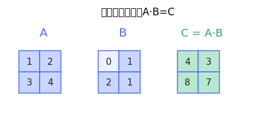
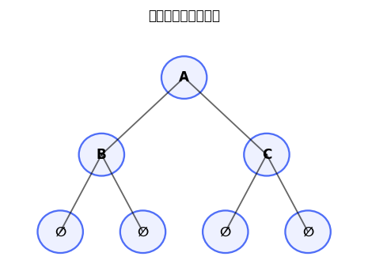

from collections import deque
from typing import List
class Solution:
def minMoves(self, classroom: List[str], energy: int) -> int:
m, n = len(classroom), len(classroom[0])
start = None
litter_id = {}
for r in range(m):
for c, ch in enumerate(classroom[r]):
if ch == 'S':
start = (r, c)
elif ch == 'L':
litter_id[(r, c)] = len(litter_id)
target = (1 << len(litter_id)) - 1
q = deque([(start[0], start[1], 0, energy, 0)])
seen = {(start[0], start[1], 0, energy)}
directions = ((1, 0), (-1, 0), (0, 1), (0, -1))
while q:
r, c, mask, remain, dist = q.popleft()
if mask == target:
return dist
if remain == 0:
continue
for dr, dc in directions:
nr, nc = r + dr, c + dc
if not (0 <= nr < m and 0 <= nc < n):
continue
if classroom[nr][nc] == 'X':
continue
next_remain = remain - 1
if classroom[nr][nc] == 'R':
next_remain = energy
next_mask = mask
if (nr, nc) in litter_id:
next_mask |= 1 << litter_id[(nr, nc)]
state = (nr, nc, next_mask, next_remain)
if state not in seen:
seen.add(state)
q.append((nr, nc, next_mask, next_remain, dist + 1))
return -1
🚀 去 LeetCode 做题 →

